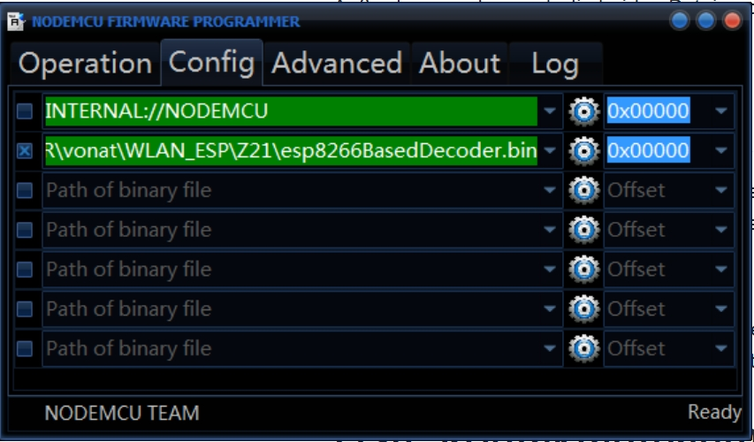
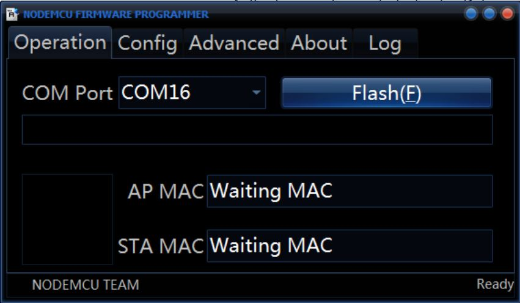
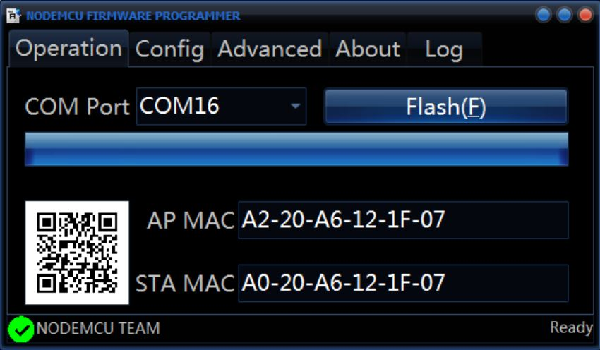
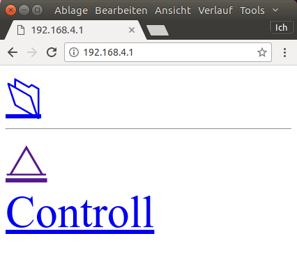
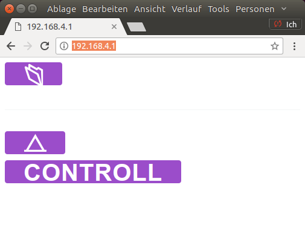

Erste Schritte
Die Seite soll euch bei den ersten Schritten unterstützen.
Hardware
Für die ersten Schritte, benötigt ihr eine ESP8266-Platine und ein passenden USB-Kabel.
Ich empfehle entweder den Nodemcu V2(*) oder den D1 Mini(*), die für wenige Euros in Asien bestellt werden können. Je nach Verwendungszweck sind die Platinen mal auf den Nodemcu und mal auf den D1 Mini oder auf ein anderes Modell auslegt.
Software
Sofern ihr nicht selber am Framework entwickelt wollt, braucht ihr zum einen ein Programm zu Flashen (also zum Übertragen des Codes auf den ESP8266) und ein Programm mit dem ihr die Debug-Ausgabe des Boards euch anzeigen lassen kann.
Zum Flashen kann der NodeMCU-flasher genutzt werden. Download:Windows 32, Windows 64
Für den Zugriff auf die Debug-Ausgaben kann Putty genutzt werden: Download
Das eigentliche Programm (BIN-Datei), die Firmware, welche mit Hilfe des Flash-Programmes auf den ESP8266 übertragen wird, kann man mit genügend Vorwissen selber kompilieren oder einfacher heruntergeladen werden.
Außerdem werden noch die beiden Dateien css.css und milligram.min.css benötigt, die hier heruntergeladen werden können.
Flashen
Nur das ESP8266-Board (ohne weitere Platinen oder ähnliches) wird an den Rechner angeschlossen und anschließend NodeMCU-Flasher gestartet.
Nach dem Starten muss als erstes die richtige BIN-Datei ausgewählt werden:

Danach kann mit dem Flashen begonnen werden, in dem auf den "Flash"-Button geklickt wird.

Wenn das Flashen erfolgreich durchgeführt wurde, solltet ihr folgende Meldung sehen (MAC-Adresse können natürlich abweichen):

Wartet nach dem ersten erfolgreichen Flashen erstmal knapp eine halbe Minute ab. In dieser Zeit formatiert der ESP8266 seinen eingebauten Datenspeicher.
Erste Kontaktaufnahme
Die erste Kontaktaufnahme erfolgt über WLAN. Nachdem der ESP8266 fertig ist und ggf. einmal neu gestartet wurde (USB-Kabel raus/rein), sollte er ein eigenes WLAN mit dem Namen "HALLO WORLD" aufspannen. Verbindet euch bitte mit diesem WLAN und gebt in einem Browser die folgende Adresse ein "192.168.4.1". Danach solltet ihr eine Webseite der folgenden Art sehen: 
Anschließend müssen die Dateien css.css und milligram.min.css hochgeladen werden.
Hierzu muss das Ordnersymbol angeklickt werden:

Anschließend für beide Dateien jeweils einmal auf "Datei auswählen" klicken, die entsprechende Datei auswählen und auf "Send" klicken.
Die Hauptseite "192.168.4.1" sollte anschließend so aussehen: 
Kontaktaufnahme über die serielle Schnittstelle
Um bei evtl. Problemen vorbereitet zu sein, solltet ihr jetzt versuchen, über Putty eine Verbindung zum ESP8266 aufzubauen.
TODO: Ausführliche Erklärung; 115200 Baud, Wenn man ein d in Putty sendet, sollten Debug Informationen angezeigt werden
Weitere Informationen über die Debug-Schnittstelle finden sich hier
Konfigurieren
In diesem Zustand kann der ESP8266 noch nicht viel. Als nächstes muss die Konfigurations-Datei hochgeladen werden. Die Konfiguration ist von dem Einsatzzweck abhängig. Die jeweilige Konfigurationsdatei (config.json) muss dann analog zu den css.css und milligram.min.css hochgeladen werden. Anschließend muss der Prozessor neu gestartet werden.